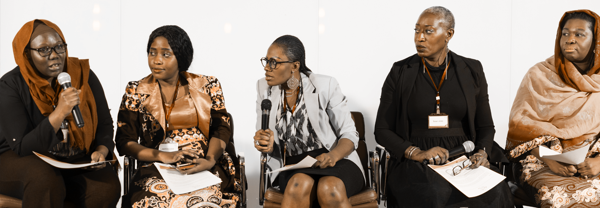

Movement

Movement Organizers
Wikimedia has thousands of volunteers who are contributing work beyond creating content on Wikipedia and sister projects: they organize activities, bring people together and form communities to teach others how to meaningfully contribute their knowledge to the Wikimedia projects. “Movement organizers” help the movement become more diverse, create more and better content, and build communities. This project focuses on understanding the life cycle of an organizer by documenting paths, practices, challenges, and risks faced by organizers throughout the Wikimedia movement. It also identifies consistent needs, challenges, and patterns of successful organizing.
Growth of Small Wikis (Projected in 2019)
This study identifies the barriers that prevent small Wikipedias from growing into medium Wikipedias. Our findings will be used to address those challenges and support communities to more easily grow their Wikis.